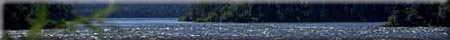

Dichotomous Key Classification Activity
Grade and Subject Level: Biology 20
Background information:
1. Dichotomous keys are used to help identify organisms. They usually consist of statements in pairs, designed in such a way as to lead you to the identities of the organisms being keyed.
example - Body covering is hair or fur ..
Body covering consists of scales ..
2. Each statement is followed either by an organismís name or a number. The number will indicate to which pair of statements you go next to continue the keying.
3. When you are trying to key an organism, always start with the first pair of statements and choose the most suitable statement which applies to the description or characteristics of the particular organism you are trying to key out.
4. Repeat the procedure until you have identified the organism.
Directions:
See if you can identify the trees of Saskatchewan using a dichotomous key. Use the key to help you identify the tree species diagrams. Drag and drop the tree name beside the appropriate diagram.
Diagrams:
(1-10 2 per row if can fit total of 5 (?) rows leave blank beside each to drag name)
Link blank to correct description following key
1. Jack Pine
2. Balsam Fir
3. Willow
4. White Poplar
5. Green Ash
6. Manitoba Maple
7. Lodgepole
8. Black Spruce
9. Tamarack
10.Balsam Poplar
Dichotomous Key:
1. Leaves are broad, blade-like..........go to..........2
Leaves are needle-like..........go to..........6
2. Leaves opposite on stem..........go to..........3
Leaves alternately-arranged on stem..........go to..........4
3. Compound leaves, 3 to 7 leaflets, irregularly lobed..........Manitoba Maple
Compound leaves, 7 oval shaped leaflets..........Green Ash
4. Leaves narrow; finely toothed margins..........Willow
Leaves oval, sharp tip..........go to..........6
5. Leaf stalk shorter than leaf blade; upper leaf surface shiny..........Balsam (or black)poplar
Leaf stalk flattened causing leaves to flutter in the wind; upper surface dull..........Trembling Aspen (white poplar)
6. Leaves arranged singly on stem..........go to..........7
Leaves arranged in clusters of two on the stem..........go to..........8
Leaves arranged in clusters of 10-20 on dwarf twigs..........Tamarack
7. Needles flat, blunt and arranged in two rows on opposite sides of the twig..........Balsam Fir
Needles sharp and stiff; irregular placement on stem..........Black Spruce
8. Leaves often spiral and end in sharp point..........Lodgepole
Leaves extend straight..........Jack
Pine